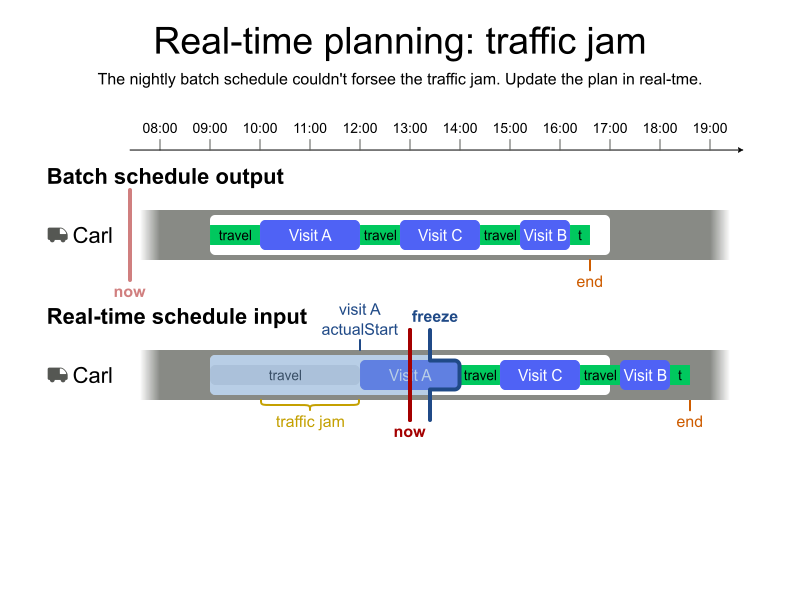
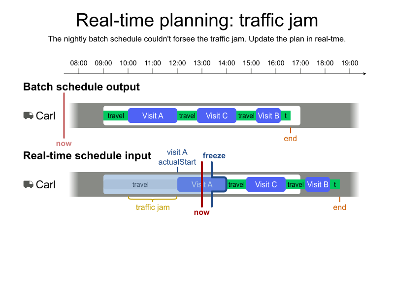

Geoffrey De Smet
Geoffrey De Smet
Job Scheduling
by Geoffrey De Smet
Introduction


Time windows and opening hours


Shift hours and overtime


Lunch breaks and personal appointments


Skills and skill levels


Dependencies between visits


Visit assignment restrictions

Technician costs


Fairness


Multi-vehicle visits


Real-time planning


 



Recommend time window


Timezones and daylight saving time


Q & A
| Learn more | timefold.ai |
|---|---|
| Get started | app.timefold.ai |
| Feedback |
|